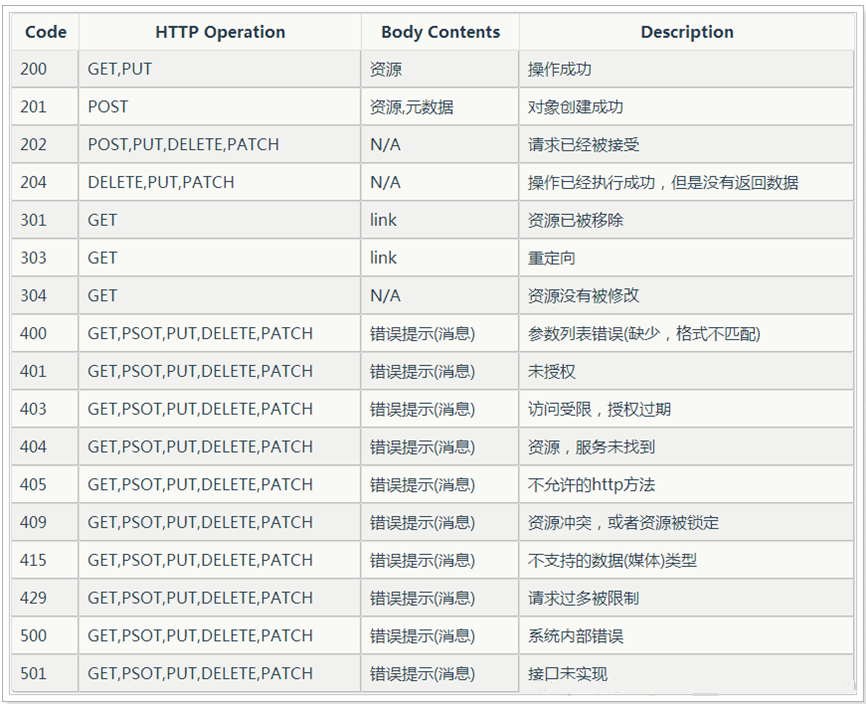

RESTful API
Rest
- Representational State Transfer : 表述性状态转变
- 它首次出现在2000年Roy Fielding的博士论文中,Roy Fielding是HTTP规范的主要编写者之一.他在论文中提到：”我这篇文章的写作目的，就是想在符合架构原理的前提下,理解和评估以网络为基础的应用软件的架构设计,得到一个功能强、性能好、适宜通信的架构
- REST指的是一组架构约束条件和原则.如果一个架构符合REST的约束条件和原则,我们就称它为RESTful架构
RESTful
- RESTful是一种常见的REST应用,是遵循REST风格的web服务,REST式的web服务是一种ROA(面向资源的架构)
- 它使用典型的HTTP方法,诸如GET,POST.DELETE,PUT来实现资源的获取,添加,修改,删除等操作.即通过HTTP动词来实现资源的状态扭转

HTTP响应状态码
根据http响应码,判断请求状态,进而做出提醒

Mapping详解
Mapping是ES中的一个很重要的内容,它类似于传统关系型数据库中的Table的Schema,用于定义一个索引(Index)的某个类型(Type)的数据的结构
在ES中,我们无需手动创建type和mapping.在默认配置下,ES可以根据插入的数据自动地创建type及其mapping,也可以通过配置文件关闭ES的自动创建mapping功能
mapping中主要包括字段名,字段数据类型和字段索引类型这三个方面的定义
字段名: 与传统数据库字段名作用一样,就是给字段起个唯一的名字,好让系统和用户能识别
字段数据类型: 定义该字段保存的数据的类型,不符合数据类型定义的数据不能保存到ES中
ES所支持的数据类型
| 数据类型大类 | 数据类型小类 |
|---|---|
| String | string,text,keyword |
| Whole number | byte,short,integer,long |
| Floating point | float,double |
| Boolean | boolean |
| Date | date |
- text：该类型被用来索引长文本，在创建索引前会将这些文本进行分词，转化为词的组合，建立索引；允许es来检索这些词，text类型不能用来排序和聚合
- keyword：该类型不需要进行分词，可以被用来检索过滤、排序和聚合，keyword类型自读那只能用本身来进行检索（不可用text分词后的模糊检索）
字段索引类型: 索引是ES中的核心,ES之所以能够实现实时搜索,完全归功于Lucene这个优秀的Java开源索引.在传统数据库中,如果字段上建立索引,我们仍然能够以它作为查询条件进行查询,只不过查询速度慢点.而在ES中,字段如果不建立索引,则就不能以这个字段作为查询条件来搜索
mapping中string类型字段可以配置的索引类型
| 索引类型 | 解释 |
|---|---|
| analyzed | 首先分析这个字符串,然后再建立索引.换言之,以全文形式索引此字段 |
| not_analyzed | 索引这个字段,使之可以被搜索,但是索引内容和指定值一样.不分析此字段 |
| no | 不索引这个字段.这个字段不能被搜索到 |
如果索引类型设置为analyzed,在表示ES会先对这个字段进行分析(一般来说,就是自然语言中的分词)
Elasticsearch RESTful API使用
集群信息API
查看集群健康信息
curl -XGET "localhost:9200/_cat/health?v"
返回结果:
| epoch | timestamp | cluster | status | node.total | node.data | shards | pri | relo | init | unassign | pending_tasks | max_task_wait_time | active_shards_percent |
|---|---|---|---|---|---|---|---|---|---|---|---|---|---|
| 1575537821 | 09:23:41 | HengheElasticsearch | green | 2 | 2 | 10 | 5 | 0 | 0 | 0 | 0 | - | 100.0% |
结果字段意义:
- cluster: 集群名.elasticsearch.yml配置文件中配置的cluster.name值
- status: 集群状态.集群共有green(一切正常),yellow(所有数据可用,但是某些复制没有被分配)或red(某些数据不可用)中的三种状态
- node.total: 集群中的节点数
- node.data: 集群中的数据节点数
- shards: 集群中总的分片数量
- pri: 主分片数量,英文全称为private
- relo: 复制分片总数
- unassign: 未指定的分片数量
查看集群中的节点信息
curl -XGET "localhost:9200/_cat/nodes?v"
返回结果:
| ip | heap.percent | ram.percent | cpu | load_1m | load_5m | load_15m | node.role | master | name |
|---|---|---|---|---|---|---|---|---|---|
| 192.168.101.33 | 48 | 69 | 4 | 0.39 | 0.44 | 0.46 | mdi | * | henghe-033 |
| 192.168.101.34 | 46 | 34 | 1 | 0.23 | 0.25 | 0.22 | mdi | - | henghe-034 |
查看集群中的索引信息
curl -XGET "localhost:9200/_cat/indices?v"
返回结果:
| health | status | index | uuid | pri | rep | docs.count | docs.deleted | store.size | pri.store.size |
|---|---|---|---|---|---|---|---|---|---|
| green | open | index | VULTFuhATu-2CJtghd51lQ | 5 | 1 | 0 | 0 | 2.5kb | 1.2kb |
Index相关API
创建新的索引
curl -XPUT "localhost:9200/index_one"
返回信息: {“acknowledged”:true,”shards_acknowledged”:true,”index”:”index_one”}
上面的操作使用默认的配置信息创建一个索引。大多数情况下，我们想在索引创建的时候就将我们所需的mapping和其他配置确定好。下面的操作就可以在创建索引的同时，创建settings和mapping
1 | curl -XPUT "localhost:9200/index_test" -d ' # 注意这里的'号 |
删除一个索引
curl -XDELETE "localhost:9200/index_test"
返回信息: {“acknowledged”:true}
Docunent相关API
新增一个文档
1 | curl -H "Content-Type: application/json" -XPUT 'localhost:9200/index_test/test_type/1?pretty' -d ' |
更新一个文档
1 | curl -H "Content-Type: application/json" -XPOST 'localhost:9200/index_test/test_type/1?pretty' -d ' # 这里的1必须是索引中已经存在id，否则就会变成新增文档操作 |
删除一个文档
curl -H "Content-Type: application/json" -XDELETE 'localhost:9200/index_test/test_type/1?pretty' # 这里的1必须是索引中已经存在id
查询单个文档
curl -H "Content-Type: application/json" -XGET 'localhost:9200/index_test/test_type/1?pretty'
基本Query查询
Elasticsearch Query查询
数据准备及简单查询
1 | # 创建索引,指定Mapping |
term查询和terms查询
term query回去倒排索引中寻找确切的term(即精准查询),它并不知道分词器的存在.这种查询适合keyword,numeric,date
term: 查询某个字段里含有某个关键词的文档
1 | GET /estest/test/_search |
terms: 查询某个字段里含有多个关键字的文档
1 | GET /estest/test/_search |
控制查询返回的数量
from: 从哪一个文档开始size: 需要的个数
1 | GET /estest/test/_search |
返回版本号
version: 当设置version为true时,查询的文档中将返回版本信息,默认情况是false
1 | GET /estest/test/_search |
match查询
match: query知道分词器的存在，会对filed进行分词操作，然后在查询
1 | GET /estest/test/_search |
match_all：查询所有文档
1 | GET /estest/test/_search |
multi_match：可以指定多个字段
1 | GET /estest/test/_search |
match_phrase：短语匹配查询
Elasticsearch引擎首先分析（analyze）查询字符串，从分析后的文本中构建短语查询，这意味着必须匹配短语中的所有分词，并且保证各个分词的相对位置不变
1 | GET /estest/test/_search |
指定返回字段
_source：可在_source中设置想返回的字段
1 | GET /estest/test/_search |
控制加载的字段
includes：包含某些字段，可以使用通配符进行查询excludes：排除某些字段，可以使用通配符进行查询
1 | GET /estest/test/_search |
排序
使用sort实现排序,desc降序,asc升序
1 | GET /estest/test/_search |
前缀匹配查询
1 | GET /estest/test/_search |
范围查询
range: 实现范围查询
参数: from、to、include_lower、include_upper、boost
- include_lower：是否包含范围的左边界，默认是true
- include_upper：是否包含范围的右边界，默认是true
1 | GET /estest/test/_search |
wildcard查询
允许使用通配符 * 和 ? 来进行查询
- *：代表0个或者多个字符
- ?：代表任意一个字符
1 | GET /estest/test/_search |
fuzzy实现模糊查询
value：查询的关键字
boost：查询的权值，默认值是1.0
min_similarity：设置匹配的最小相似度，默认值为0.5，对于字符串，取值为0-1（包含0和1）；对于数值，取值可能大于1；对于日期类型取值为1d，1m等，1d就代表1天
prefix_length：指明区分词项的共同前缀长度，默认是0
max_expansions：查询中的词项可以扩展的数目，默认可以无限大
1 | GET /estest/test/_search |
高亮搜索结果
1 | GET /estest/test/_search |
查询结果分析
took：查询耗费的时间，单位是毫秒
_shard：共请求了多少个shard
total：查询出的文档总个数
max_score：本次查询中，相关度分数的最大值，文档和此次查询的匹配度越高，_score的值越大，排位越考前
hits：默认查询前10个文档
time_out： 查询超时时间，设置超时时间将返回已经查询出来的数据
1 | { |
多index、多type查询模式
指定estest、estest1索引下的所有文档: GET /estest,estest1/_search
号为通配符，查询结尾是t和1的索引下的所有文档: `GET /t,*1/_search`
_all表示集群下的所有索引: GET /_all/_search
Multi Get批量获取
Multi Get API可以通过索引名,类型名,文档ID,字段名 一次得到一个文档集合,文档可以来自同一个索引库,也可以来自不同的索引库
1 | GET _mget |
Bulk批量操作
bulk格式:
{action:{metadata}}\n
{requestbody}\n
action(行为): 包含create(文档不存在时创建),update(更新文档),index(创建新文档或替换已用文档),delete(删除一个文档)
create和index的区别 : 如果数据存在,使用create操作失败,会提示文档存在,使用index则可以成功执行
metadata(行为操作的具体索引信息) : 需要指明数据的_index,_type,_id
批量添加
1 | POST /estest/test/_bulk |
批量删除
删除的批量操作不需要请求体
1 | POST /estest2/test2/_bulk |
批量操作
1 | POST /_bulk |
bulk一次最大处理多少数据量
bulk会将要处理的数据载入内存中,所以数据量是有限的,最佳的数据量不是一个确定的数据,它取决于你的硬件,你的文档大小以及复杂性,你的索引以及搜索的负载
一般建议是1000-5000个文档,大小建议是5-15MB,默认不能超过100M,可以在es的配置文件(elasticsearch.yml)中,bulk的线程池配置是内核数+1
聚合查询
聚合是一种基于查询条件对数据进行分桶,计算的方法
聚合可以嵌套,由此可以组合复杂的操作
聚合的三种分类
- Metric(指标聚合)
- 对文档进行权值计算,输出结果即是权值
- 基于特定字段(field)或脚本值计算
- Bucketing(分桶聚合)
- 对文档进行分组操作,把满足相关特性的文档分到一个桶里,即分桶.输出结果是包含多个文档的桶
- 基于一个关键字(field, script),以及一些桶分的判断条件进行聚合,符合条件的会分到对应的组
- Pipeline(管道聚合)
- 对其它聚合操作的输出以及关联指标进行聚合
- 此类聚合的作用对象大多是桶,而不是文档,是一种后期对每一个分桶的一些计算操作
指标聚合
1 | GET /estest3/test3/_search |
指标聚合操作选择
sum聚合 : sum是一个求累加值的聚合min聚合 : min是一个求最小值的聚合max聚合 : max是一个求最大值的聚合avg聚合 : avg是一个求平均值的聚合cardinality聚合 : cardinality是一个求基数的聚合(相当于该字段互不相同的值有多少类,输出的是种类数)stats聚合 : stats是统计聚合,基于文档的某个值,计算出一些统计信息(min, max, sum, count, avg)extended_stats聚合 : extended_stats是扩展统计聚合,基于文档的某个值,计算出一些统计信息(比stats聚合多了sum_of_squares, variance, std_deviation, std_deviation_bounds)geo_bounds聚合 : 地理边界聚合,基于文档的某个字段(geo-point类型字段),计算出该字段所有地理坐标点的边界(左上角/右下角坐标点)percentiles聚合 : 基于聚合文档中某个数值类型的值,求百分位数聚合value_count聚合 : 值计数聚合，计算聚合文档中某个值的个数top_hits聚合 : 最高匹配权值聚合，跟踪聚合中相关性最高的文档,该聚合一般用做 sub-aggregation，以此来聚合每个桶中的最高匹配的文档
桶聚合
histogram聚合
直方图聚合,基于文档中的某个[数值类型]字段.通过计算来动态的分桶
1 | 分桶计算如下: |
参数 :
field :字段,必须为数值类型interval :分桶间距min_doc_count :最少文档数桶过滤,只有不少于这么多文档的桶才会返回extended_bounds :范围扩展order :对桶排序,如果histogram聚合有一个权限聚合类型的”直接”子聚合,那么排序可以使用子聚合中的结果offset :桶边界位移,默认从0开始keyed :hash结构返回,默认以数组形式返回每一个桶missing :配置缺省默认值
date_histogram聚合
日期直方图聚合,基于日期类型,以[日期间隔]来桶分聚合
1 | GET /elastic/doc/_search |
可用的时间间隔类型为 :
- year, quarter, month, week, day, hour, minute, second
- 其中,除了year, quarter和month,其余可用小数形式
参数 :
field :字段,必须是日期类型interval :分桶间距format :定义日期的格式,配置后会返回一个key as string的字符串类型日期time_zone :定义时区,用作时间值的调整
range聚合
范围聚合,基于某个值,以[字段范围]来桶分聚合
范围聚合包括from值,不包括to值(区间前闭后开)
1 | GET /elastic/doc/_search |
参数 :
ranges :配置区间数组,每一个元素是一个区间keyed :以一个关联的唯一字符串作为键,以HASH形式返回,而不是默认的数组script :利用script执行结果替代普通的field值进行聚合
date_range聚合
日期范围聚合,基于日期类型的值,以[日期返回]来桶分聚合
日期范围可以用各种Date Math表达式
包括from的值,不包括to的值
1 | GET /elastic/doc/_search |
参数 :
format :定义日期格式,配置后会返回一个[to/from]_as_string的字符串类型日期,默认是to/from的数值表示
IPV4_range聚合
IPV4聚合,基于一个IPV4字段,对文档进行[IPV4范围]的桶分聚合
1 | GET /elastic/doc/_search |
filters聚合
多过滤聚合,基于多个过滤条件,来对当前文档进行[过滤]的聚合,每个过滤都包含所有满足它的文档(多个bucket中可能重复)
1 | GET /elastic/doc/_search |
参数 :
filters :配置过滤条件,支持HASH或数组格式other_bucket_key :作为不匹配所有过滤条件的文档的bucket名称
filter聚合
过滤聚合,基于一个条件,来对当前的文档进行过滤的聚合
1 | GET /elastic/doc/_search |
Elasticsearch主要是观看下面的博客进行学习
原文链接：https://blog.csdn.net/zx711166/article/details/81811548